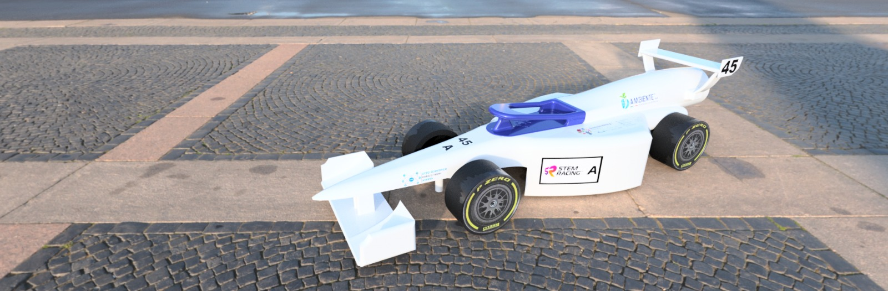

Project Nisida 2026
Forme scolpite dal vento. Nata per dominare i 20 metri del rettilineo ad aria compressa.
Il perfetto bilanciamento tra il regolamento STEM Racing Italy e la massima innovazione ingegneristica.
Il corpo di Nisida è stato progettato riducendo al minimo la sezione frontale per fendere l'aria riducendo lo strato limite turbolento.
La livrea adotta i colori del Parthenope Racing Team: una base bianca nitida per esaltare le linee e sfumature di blu e azzurro che simboleggiano il flusso aerodinamico e l'energia fluida.